<div id="detailView">
    <div id="detailView_content" class="detailView-content">
        <div class="entirety-content hidden-detailView-content">
            <div class="jumbotron" id="hero">
                <div class="container-span">
                    <div class="row1">
                        <span class="back-description">定制化广告“线上质量”清晰可见</span>
                    </div>
                    <div class="row2">
                        <span class="back-description">线上监控、问题闭环、监控分析</span>
                    </div>
                </div>
            </div>
            <div id="alarm_count_notify">
                <!-- <div>
                    <span class="info">您有&nbsp;<a>{{userInfo.unhandleAlarmCount}}</a>&nbsp;条报警等待处理！</span>
                </div> -->
                <div class="product-status-detail-title">
                    <span class="score-info">业务线健康度评分:</span>
                    <span class="info">您有&nbsp;<a>{{userInfo.unhandleAlarmCount}}</a>&nbsp;条报警等待处理！</span>
                </div>
                <div class="product-status-content">
                    <div class="product-status-detail" ng-repeat="statusItem in loadEntiretyData">
                        <div class="product-status-outter">
                            <div class="xxx">
                                <div>
                                    <a id="xxx_info{{statusItem.productId}}" name={{statusItem.productName}} value={{statusItem.productId}} score={{statusItem.score}} p0Count={{statusItem.p0MonitorCount}} p1Count={{statusItem.p1MonitorCount}} p2Count={{statusItem.p2MonitorCount}} href="#/alarm/{{statusItem.productId}}">{{statusItem.productName}}</a>
                                </div>
                            </div>
                            <div class="yyy">
                                <div><a id="yyy_score{{statusItem.productId}}">{{statusItem.score}}</a></div>
                            </div>
                        </div>
                    </div>
                </div>
            </div>
            <div class="general-description">
                <ul class="use_list">
                    <li>
                        
                        <h2>实时监控</h2>
                        <p>覆盖展现广告所有业务系统、</p>
                        <p>检索端、基础平台(筹)</p>
                        <p>提供功能监控、可用性监控、数据监控</p>
                    </li>
                    <li>
                        
                        <h2>问题闭环</h2>
                        <p>让问题发现到问题处理，有迹可寻</p>
                        <p>问题分发：责任到人</p>
                        <p>问题排查：快速定位</p>
                        <p>典型问题自动修复(筹)</p>
                    </li>
                    <li>
                        
                        <p></p>
                        <h2>监控分析</h2>
                        <p>问题风险评估系统(筹):线上损失分析、预估</p>
                        <p>线上top问题分析(筹):产品优化</p>
                        <p>线上产品质量报告(筹)</p>
                    </li>
                </ul>
            </div>
            <div id="entirety_product_status">

            </div>
        </div>
        <div class="trend-content hidden-detailView-content">trend</div>
        <div name="flow" class="flow-content hidden-detailView-content">flow</div>
        <div id="monitor_content" class="monitor-content hidden-detailView-content">
            <!--search header begin-->
            <div class="search-header">
                <div class="monitor-name-input">
                    <span class="search-title">监控项名称:</span>
                    <input id="search_monitor_name" class="input-form"  autocomplete="off">
                </div>
                <div class="monitor-level-input">
                    <span class="search-title">监控级别</span>
                    <select class="select-form" id="search_monitor_level">
                        <option value="">所有</option>
                        <option value="0">P0</option>
                        <option value="1">P1</option>
                        <option value="2">P2</option>
                    </select>
                </div>
                <div class="monitor-type-input">
                    <span class="search-title">监控类型</span>
                    <select class="select-form" id="search_monitor_type">
                        <option value="">所有</option>
                        <option value="1">展现类监控</option>
                        <option value="2">数据类监控</option>
                        <option value="3">体验类监控</option>
                    </select>
                </div>
                <div class="monitor-channel-input">
                    <span class="search-title">频道</span>
                    <select  class="select-form" id="search_monitor_channel" >
                        <option value selected="selected">所有</option>
                        <option ng-repeat="monitorChannelItem in sysInfoChannel" value={{monitorChannelItem.id}} name={{monitorChannelItem.name}}>{{monitorChannelItem.name}}</option>
                    </select>
                </div>
                <div class="monitor-search-submit">
                    <input type="submit" value="查询" class="form-control btn btn-default-style" onfocus="this.blur();" ng-click="searchMonitor()">
                </div>
            </div>

            <!-- monitor list Begin -->
            <div class="content-body">
                <div class="btn-add-monitor">
                    <input type="submit" value="新增监控项" class="submit-form btn btn-default-style" onfocus="this.blur();"  ng-click="addMonitorItem()">
                </div>
                <div class="monitor-table-content">
                    <table id="monitor_list_table" class="table table-bordered">
                        <thead>
                            <tr>
                                <th width="50">监控项ID</th>
                                <th width="70">监控项名称</th>
                                <th width="50">监控级别</th>
                                <th width="70">监控类型</th>
                                <th width="50">运行周期</th>
                                <!--<th width="80">生效时间</th>-->
                                <!--<th width="40">状态</th>-->
                                <th width="160">负责人</th>
                                <th width="80">操作</th>
                                <th width="50">创建人</th>
                            </tr>
                        </thead>
                        <tbody>
                            <tr ng-repeat="item in loadMonitorData.monitorList">
                                <td value="{{item.id}}">{{item.id}}</td>
                                <td>{{item.monitorName}}</td>
                                <td value={{item.monitorLevel}}>P{{item.monitorLevel}}</td>
                                <td value={{item.monitorTypeId}}>{{item.monitorType}}</td>
                                <td>{{item.period}}</td>
                                <!--<td>{{item.validTime}}</td>-->
                                <!--<td ng-class ="{'1' : 'open', '0' : 'closed'}[item.status]">{{item.status == 0 ? "未启用" : "启用"}}</td>-->
                                <td>{{item.owner}}</td>
                                <td>
                                    <a  class="edit-item" ng-click="editMonitorItem(item.id)">编辑</a>
                                    <!--<a  class="delete-item" ng-click="deleteMonitorItem()">删除</a>-->
                                </td>
                                <td>{{item.creater}}</td>
                            </tr>
                            <tr ng-hide="loadMonitorData.monitorList.length>0">
                                <td colspan="9">无数据</td>
                            </tr>
                        </tbody>
                    </table>
                </div>
                <div class="monitor-table-info"><span>共有<b ng-bind="loadMonitorData.totalCount"></b>条符合条件的信息</span></div>
            </div>
        </div>
        <div id="alarm_content" class="alarm-content hidden-detailView-content">
            <div class="sub-alarm-nav">
                <ul class="sub-alarm-nav-menu">
                    <li name="displayMonitor" class="alarm-nav-display-monitor current-li" value="1" ng-click="loadAlarmList(1)">展现监控</li>
                    <li name="qualityMonitor" class="alarm-nav-quality-monitor" value="2" ng-click="loadAlarmList(2)">质量监控</li>
                    <li name="dataMonitor" class="alarm-nav-data-monitor" value="3" ng-click="loadAlarmList(3)">数据监控</li>
                </ul>
                <span class="sub-alarm-undealed">该业务线共有&nbsp;<span class="sub-alarm-undealed-val">{{loadAlarmData.uncompletedCount}}</span>&nbsp;条报警等待处理</span>
            </div>
            <!--search header begin-->
            <div class="search-header">
                <div class="alarm-scope-input">
                    <span class="search-title">范围</span>
                    <select class="select-form" id="search_alarm_scope">
                        <option value="1" selected="selected">所有报警</option>
                        <option value="0">我的报警</option>
                    </select>
                </div>
                <div class="alarm-id-input">
                    <span class="search-title">报警ID</span>
                    <input id="search_alarm_id" class="input-form"  autocomplete="off">
                </div>
                <div class="alarm-name-input">
                    <span class="search-title">监控项名称</span>
                    <input id="search_alarm_name" class="input-form"  autocomplete="off">
                </div>
                <div class="alarm-channel-input">
                    <span class="search-title">频道</span>
                    <select  class="select-form" id="search_alarm_channel" >
                        <option value selected="selected">所有</option>
                        <option ng-repeat="alarmChannelItem in sysInfoChannel" value={{alarmChannelItem.id}} name={{alarmChannelItem.name}}>{{alarmChannelItem.name}}</option>
                    </select>
                </div>
                <div class="alarm-level-input">
                    <span class="search-title">监控级别</span>
                    <select class="select-form" id="search_alarm_level">
                        <option value="">所有</option>
                        <option value="0">P0</option>
                        <option value="1">P1</option>
                        <option value="2">P2</option>
                    </select>
                </div>
                <div class="alarm-status-input">
                    <span class="search-title">状态</span>
                    <select class="select-form" id="search_alarm_status">
                        <option value="">所有</option>
                        <option value="0">未处理</option>
                        <option value="1">处理中</option>
                        <option value="2">处理完成</option>
                    </select>
                </div>

                <div class="alarm-search-time-input">
                    <span class="search-title">报警时间:</span>
                    <input type="text" class="form-control hasDatepicker" id="search_alarm_begin_time" placeholder="开始时间">
                    --
                    <input type="text" class="form-control hasDatepicker" id="search_alarm_end_time" placeholder="结束时间">
                    </img>
                </div>

                <div class="alarm-search-submit">
                    <input type="submit" value="查询" class="form-control btn btn-default-style" onfocus="this.blur();" ng-click="searchAlarm()">
                </div>
            </div>
            <!--content begin-->
            <div class="content-body">
                <div class="alarm-table-content">
                    <table id="alarm_list_table" class="table table-bordered">
                        <thead>
                            <tr>
                                <th>报警id</th>
                                <th>query</th>
                                <th>频道</th>
                                <th>监控项名称</th>
                                <th>监控子类型</th>
                                <th>监控级别</th>
                                <th>报警时间</th>
                                <th>报警原因</th>
                                <th>状态</th>
                                <th ng-repeat="headItem in loadAlarmData.table.heads">{{headItem}}</th>
                                <th>负责人</th>
                                <th style="width: 80px;">操作</th>
                            </tr>
                        </thead>
                        <tbody>
                            <tr ng-repeat="bodyItem in loadAlarmData.table.rows">
                                <td>{{bodyItem.id}}</td>
                                <td title={{bodyItem.query}}><div style="white-space: nowrap; overflow: hidden; text-overflow: ellipsis; width: 80px;">{{bodyItem.query}}</div></td>
                                <td>{{bodyItem.channel}}</td>
                                <td>{{bodyItem.monitorName}}</td>
                                <td>{{bodyItem.subMonitorType}}</td>
                                <td>P{{bodyItem.monitorLevel}}</td>
                                <td>{{bodyItem.date}}</td>
                                <td title={{bodyItem.reason}}><div style="white-space: nowrap; overflow: hidden; text-overflow: ellipsis; width: 100px;">{{bodyItem.reason}}</div></td>
                                <td ng-class ="{'2' : 'complete', '1': 'running', '0' : 'uncompleted'}[bodyItem.status]">{{bodyItem.status == 0 ? "未处理" : (bodyItem.status == 1 ? "处理中" : "处理完成") }} </td>
                                <td ng-repeat="tdItem in bodyItem.row track by $index">{{tdItem}}</td>
                                <td>{{bodyItem.owner}}</td>
                                <td>
                                    <a class="preview" ng-click="disabledATab(bodyItem.url)">预览</a>
                                    <a  class="alarmResolve" ng-click="resolveAlarm(bodyItem.id)">处理</a>
                                    <a  class="push-next-one" ng-click="pushNextOne(bodyItem.id)">催办</a>
                                </td>
                            </tr>
                            <tr ng-hide="loadAlarmData.table.rows.length>0">
                                <td colspan="9">无数据</td>
                            </tr>
                        </tbody>
                    </table>
                </div>
                <div class="alarm-table-info">
                    <button id="pre_page_task" class="btn btn-default"  ng-click="jumpAlarmPage('pre_page')">&lt;上一页</button>
                    <label class="current-page-no" ng-model="loadAlarmData.pageIndex" pageIndex={{loadAlarmData.pageIndex}}>&nbsp<u><b ng-bind="loadAlarmData.pageIndex"></b></u>&nbsp</label>
                    <button id="next_page_task" class="btn btn-default" ng-click="jumpAlarmPage('next_page')">下一页&gt;</button>
                    <label class="total-alarm-page-count" totalCount={{loadAlarmData.totalPage}}>共<b ng-bind="loadAlarmData.totalPage"></b>页&nbsp<b ng-bind="loadAlarmData.totalCount"></b>条&nbsp&nbsp&nbsp</label>
                    <div class="page-size">
                        <select class="number-per-page" id="number_per_page">
                            <option value="30" selected>30</option>
                            <option value="50">50</option>
                            <option value="100">100</option>
                        </select>
                        <span>条/页</span>
                    </div>
                    <div class="col-lg-2 go-div">
                            <input type="text" class="buttonGO ng-pristine ng-valid" id="targetPage" ng-model="targetPage"/>
                            <span class="input-group-btn">
                                <button class="btn btn-default buttonGO" type="button" ng-click="turnAlarPage(targetPage)">Go!</button>
                            </span>
                        <div class="prompt ng-hide" ng-show="Prompt>loadAlarmdata.totalPage">*输入页数超过总页数！</div>
                    </div>
                </div>
            </div>
        </div>
    </div>
</div>


